Problem Definition
The goal of this assignment is to design and implement algorithms that delineate objects in video images and analyze their shapes.
Problem 1: Binary Image Analysis
- Implement a connected component labeling algorithm and apply it to the data below. Show your results by displaying the detected components/objects with different colors. The recursive connected component labeling algorithm sometimes does not work properly if the image regions are large. See below for an alternate variant of this algorithm. If you have trouble implementing connected component labeling, you may use an OpenCV library function, but you will be assessed a small 5 point penalty.
- If your output contains a large number of components, apply a technique to reduce the number of components, e.g., filtering by component size, or erosion.
- Implement the boundary following algorithm and apply it for the relevant regions/objects.
- For each relevant region/object, compute the area, orientation, and circularity (Emin/Emax). Also, identify and count the boundary pixels of each region, and compute compactness, the ratio of the area to the perimeter.
- Implement a skeleton finding algorithm. Apply it to the relevant regions/objects.
Problem 2: Segmentation
- Implement two segmentation algorithms
(e.g., absolute or adaptive thresholding, region growing, etc.). Apply
the algorithms to convert your color image sequence input into a binary
video output.
Segmentation can be very challenging. It is acceptable, for this homework, to make some decisions to restrict the problem you are trying to solve, for example, by defining a region of interest (a "mask") and ignoring portions of the image outside of this region. - Appy the tools you implemented for part 1 to analyze your data.
Method and Implementation
General Outline of Binary Image Analysis Algorithm
- We ended up using the OpenCV libary function floodFill as a part of our connected component labeling algorithm. Before using the function, we applied erosion and then dilation (opening) operations on the images to get rid of most of the noise.
- For the Boundary following algorithm, we attempted to use the Moore-Neighbor Tracing Algorithm that we learned in class. We're currently having trouble implementing it but plan to update on this later.
- Thanks to the use of the moments OpenCV function, we were able to successfully calculate the area, orientation, and circularity (Emin/Emax) and compute compactness, the ratio of the area to the perimeter squared.
- In our implementation of the skeleton operation, we knew that it can be with erosion and dilation. Thus, we eroded the image at each iteration and found the union of the current erosion and the opening of the erosion.
- The OpenCV methods we used include the following: erode, dilate, moments, clone, threshold, etc.
General Outline of Segmentation Algorithm
- For the first dataset of the pianist, we created getMean() to get the average image of those images frames of the painist.
- Including some helper functions we learned in lab such as myMax(), myMin(), and mySkinDetect(), we used these to calculate the difference between one said frame and the average frame. Using that difference in both images, we converted it to grayscale and binarized it, inorder to use it as a mask on the raw frame to perform skin detection.
- For the second dataset of bats, we attempted to use what we leanred from Part 1 and apply our connected component labeling algorithm to this situation. Our results for this part aren't ideal but we hope to come back with an update with better results.
- For the third dataset of walking pedestrians, we are only partially successfully here in idientify the people walking using the HOGDescriptor to find boxes for people walking in all the frames.
Experiment Results
Here are our results for the Binary Image Analysis:
| Name | Orginal Image | Connected Component Labeling Images | Boundary Images | Skeleton Images |
|---|---|---|---|---|
| Open-Fist-BW Image |  |  |  | 
|
| Open-BW-Full Image | 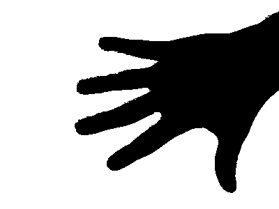 |  | | 
|
| Open-BW-Partial Image | 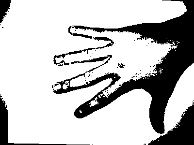 |  | | 
|
| Tumor-Fold Image |  |  | | 
|
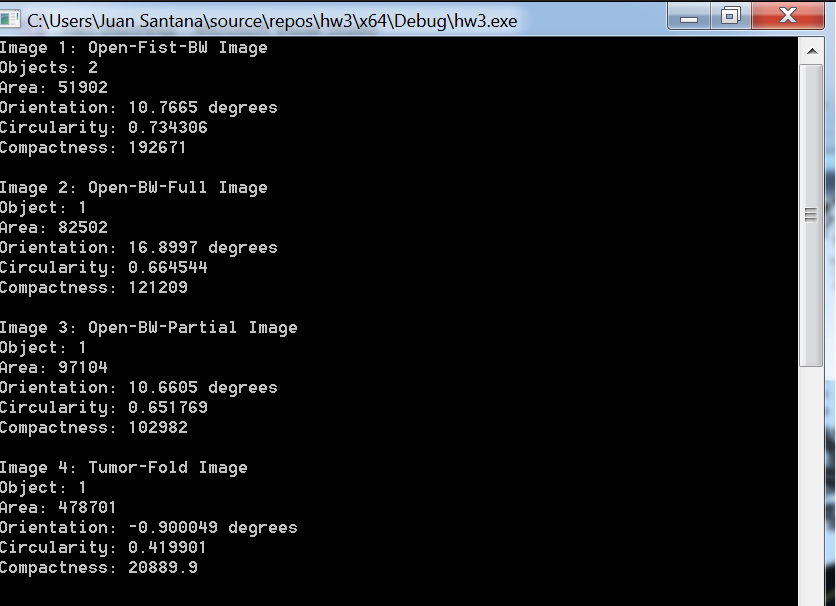
Here are our results for the Segmentation Datasets:
| The Pianist Dataset | One of the Orginal Image Frames | Average Frame Image | Difference Image | Skin Detection Image | Binary + Dilalted Skin Detection Image | Hand Detection Image |
|---|---|---|---|---|---|---|
| The Pianist | 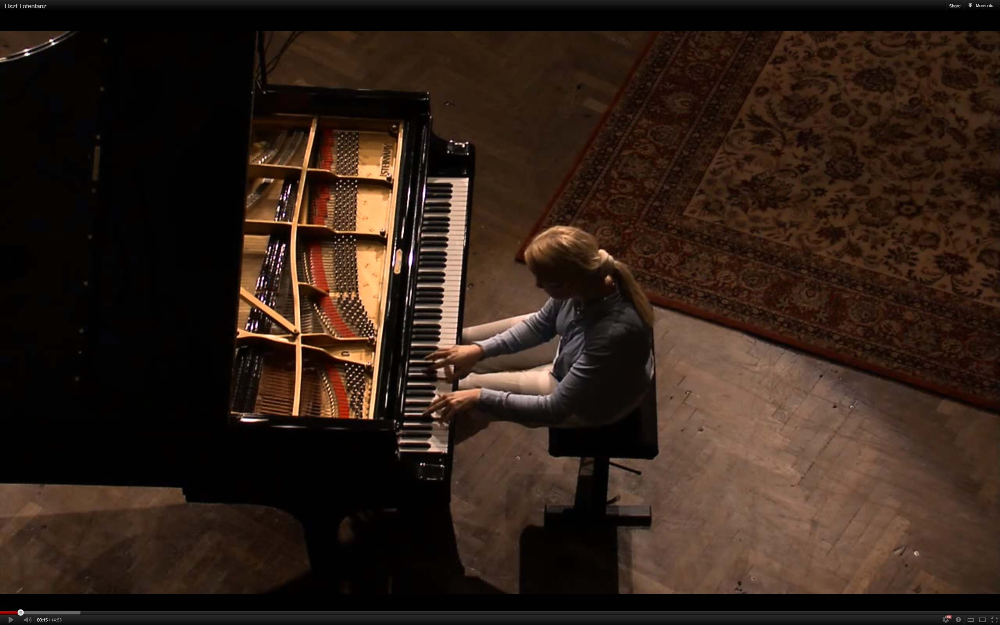 |  | 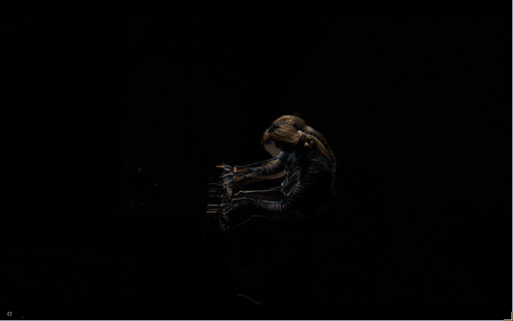 | 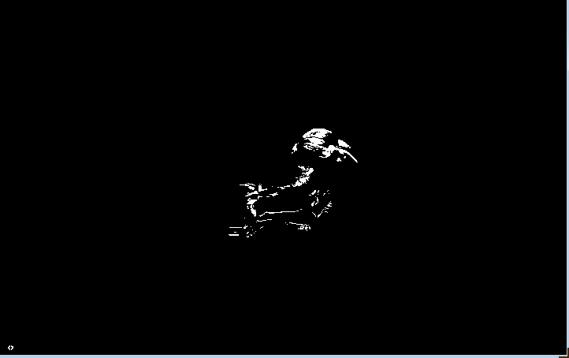 | 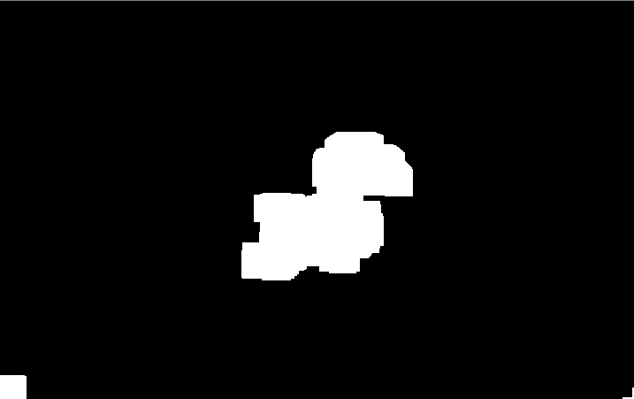 | 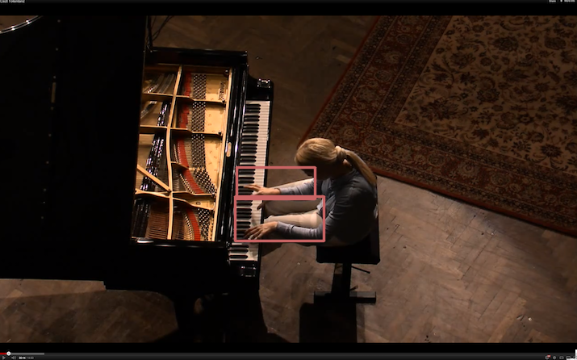 |
| Bat Dataset | One of the Orginal Image Frames | Bat Contour Image |
|---|---|---|
| Bats | 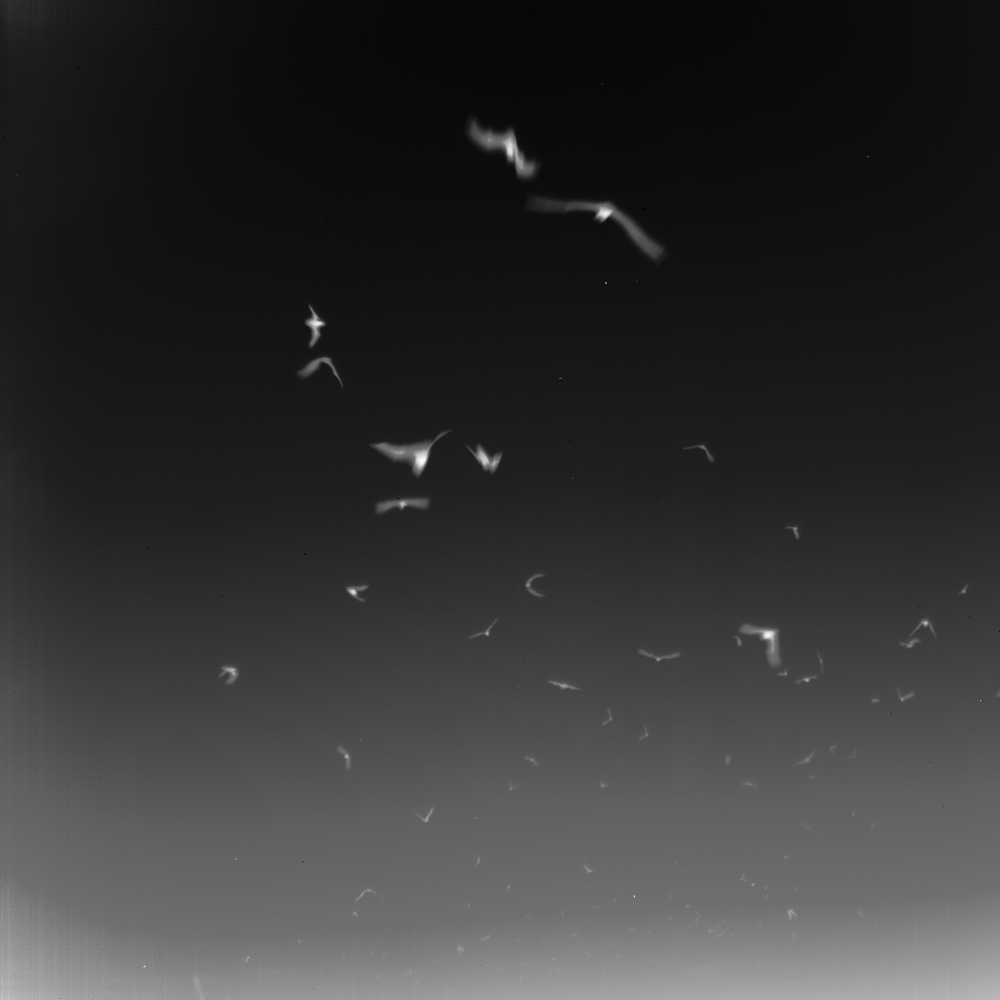 | 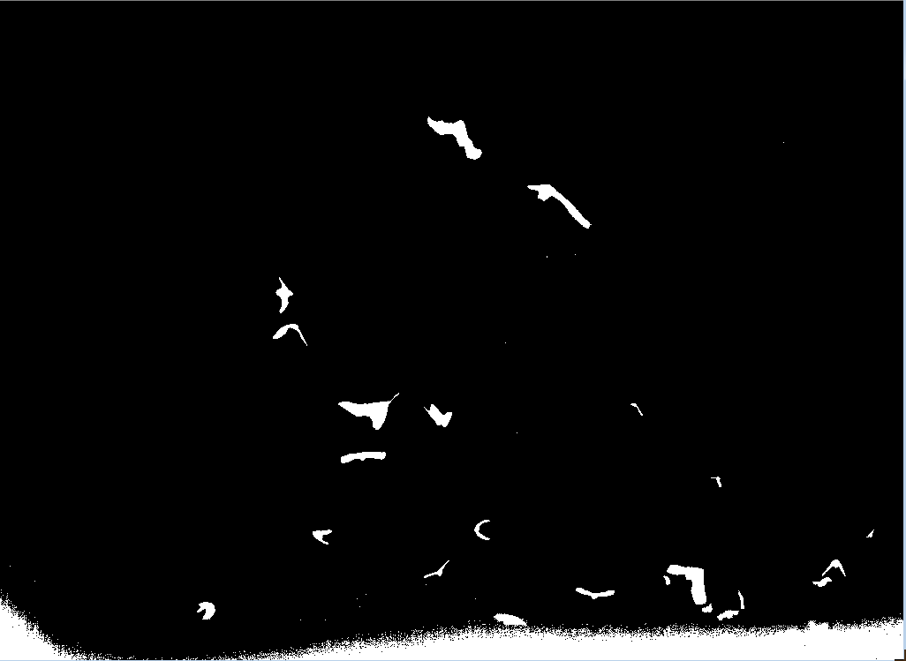 |
| Walking Pedestrians Dataset | Walking Pedestrian Detection Image | Result Output |
|---|---|---|
| Trial 1 | 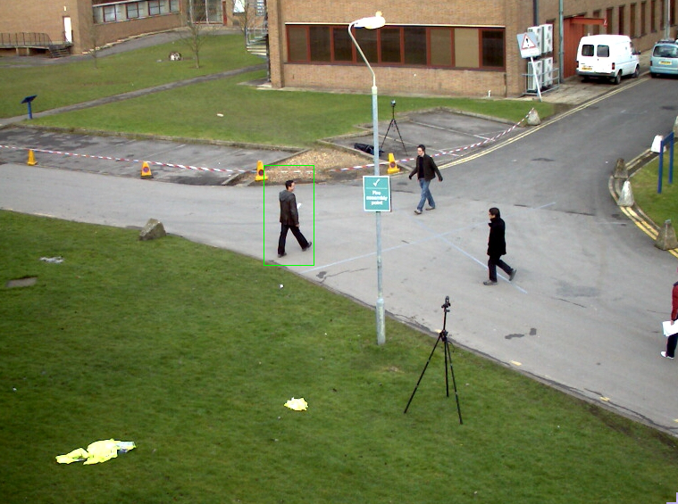 | 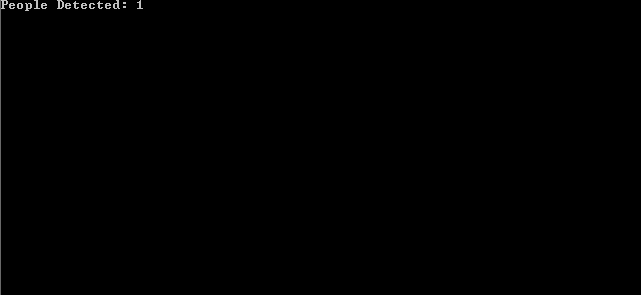 |
| Trial 2 | 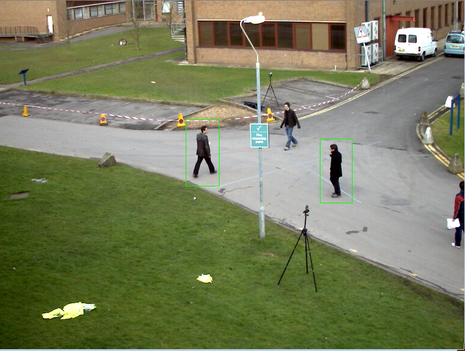 | |
| Trial 3 | 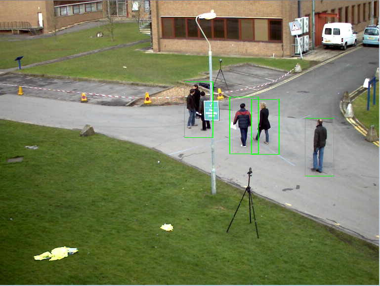 | 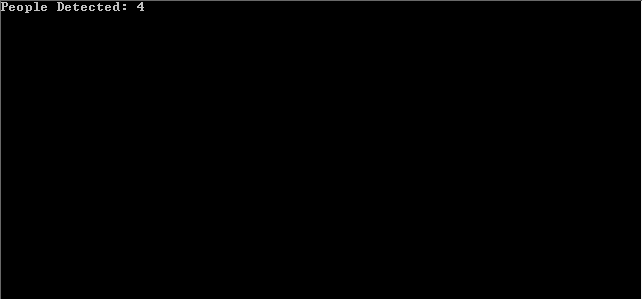 |
| Trial 4 | 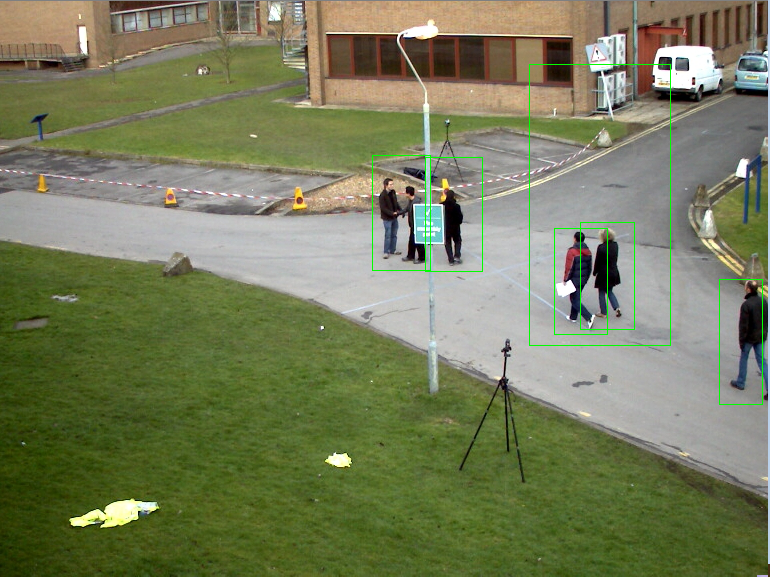 | 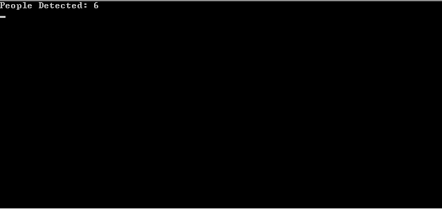 |
Experiment Variables
Experiment Environment: Windows 7 Ultimate x64 Machine Applications: Visual Studio 2017 Community Version, OpenCV 3.2, C++ Programming Language Average Exection Time of Code: 15 seconds Process Memory Rate: 30 MBs/second CPU (% of all processors): approx. 42% Setting: BU Mugar Memorial Libary 2nd Floor
Discussion
Discuss your method and results:
- What we noticed about our findings in Part 1 is that it was very hard to get rid of all of the noise and would require erosion operations to get rid of all of the noise. So due to the noise left over, it's very likely that our calculations for Tumor Fold Image such as the area, circularity, etc are inaccurate. We also noticed obvious things like an image of a fist having a smaller area than an area of an open hand but a higher compactness.
- As for Part 2, we noticed that when it came to the Pianist Dataset that the code has a hard time differentiating the painist's hands and the piano keys as the skin detection interpreted them to be the same thus making the segementation for hand detection even harder. The Bat Dataset was also challenging as well since it required us to learn more about adaptive thresholding while the Pedestrian Dataset had us learning how to use HOGDescriptor find boxes for people walking in all the frames.
Conclusions
After doing both programming assignment parts, it has been made clear to us that tracking the same objects over a span of image frames can be very challenging. This programming assignment was by far the most challenging and we felt like we needed more time in perfecting our image analysis code.
Credits and Bibliography
Circularity Formula: